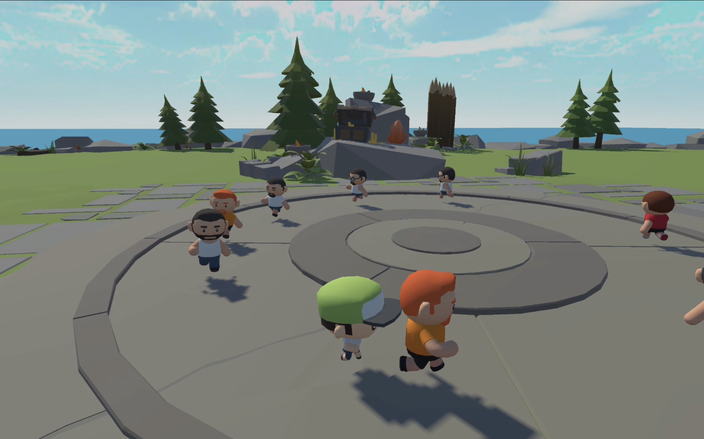
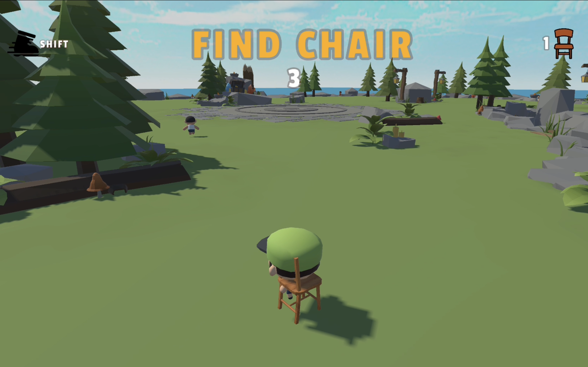
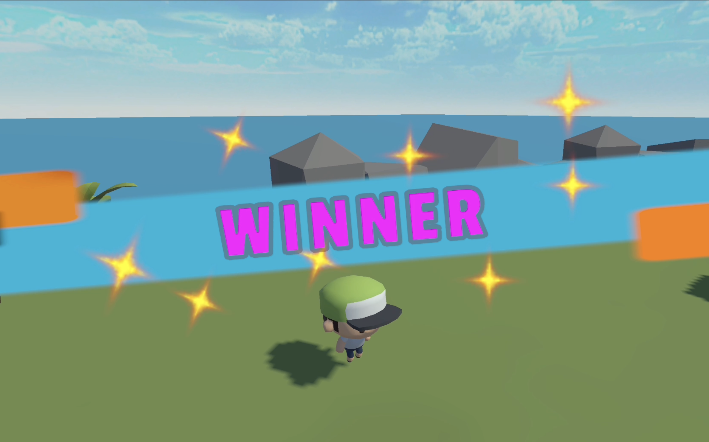
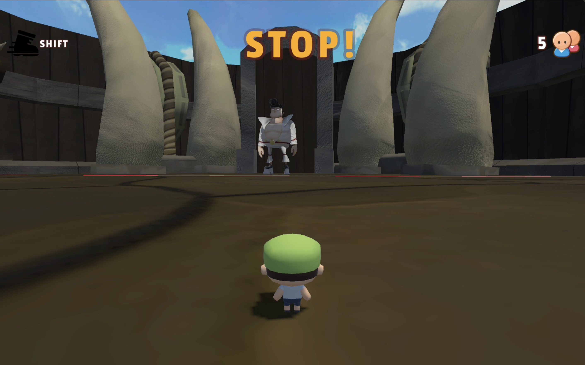
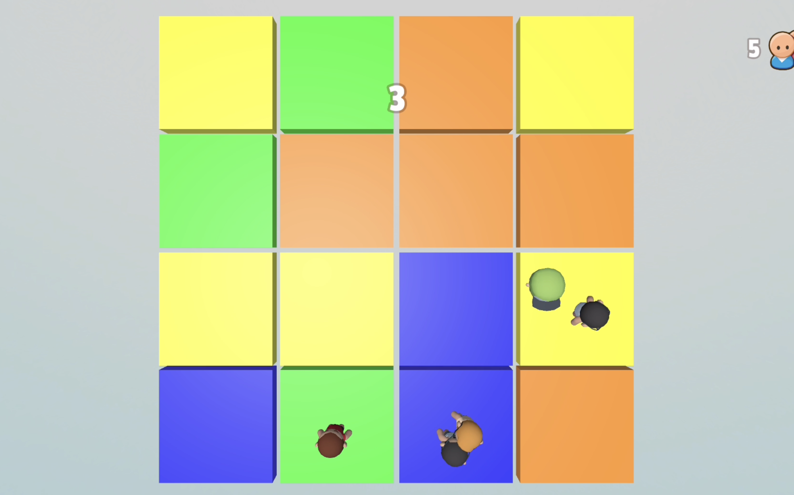
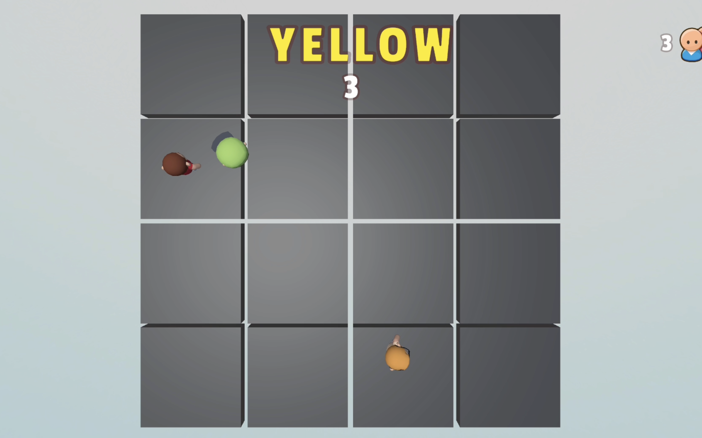

Bismillah
About Bismillah
Bismillah is a chaotic 3D survival party game built in Unity, inspired by elimination shows like Squid Game and party titles like Fall Guys. Every match throws you into a randomly selected survival mode against a crowd of AI contestants where hesitation means instant elimination.
From scrambling for hidden chairs across a rocky island when the music stops, to freezing mid-sprint in a gladiator arena, and memorizing flashing color grids under a ticking countdown, the game tests quick reflexes, speed, and memory.
Randomly Selected Modes
- Find Chair (Musical Chairs): Contestants march in a circle while music plays. Once the alarm triggers, everyone has 15 seconds to sprint (Shift) across the island and claim a spawned chair before they run out.
- GO! / STOP! (Red Light, Green Light): Sprint across a bone-lined arena toward the giant guard at the gate during "GO!", and freeze immediately when "STOP!" appears or get eliminated.
- Memory Color Grid: Top-down 4x4 tile arena. Memorize the colored squares before they turn gray, then rush to the called color (Blue, Orange, Yellow, Green) before time expires.
Gameplay Screenshots

Island Arena
Contestants gathered on the island waiting for the next survival signal.

The Scramble
Racing against AI opponents and the countdown timer to stay in the game.

Match Outcome
Outlasting the other contestants to claim victory in the arena.

High-Stakes Tension
Testing reflexes and timing under pressure where a single mistake leads to elimination.

Pattern Memorization
Observing the arena layout during the brief preview window before the floor resets.

Final Seconds
Rushing to the safe zone before the timer hits zero.